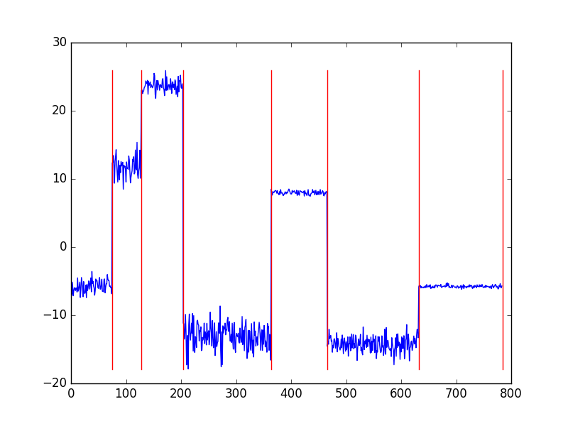

select
cs1.callingNum , cs1.switchNum,
cs2.callingNum , cs2.switchNum
from
CallEvent.win:time(5 sec) as cs1, CallEvent.win:time(5 sec) as cs2
where
cs1.callingImsi = cs2.callingImsi
and cs1.switchNum != cs2.switchNumAnaliza strumieniowa w Internecie Rzeczy
Dominik Waśniowski opiekun naukowy dr inż. Janusz Granat
Cel pracy
Agenda
Internet Rzeczy
Platformy
Sytuacje nietypowe
Co zostało
Internet Rzeczy
Miliony czujników, urządzeń podłączonych do sieci
Jeszcze więcej danych generowanych przez nie
Możliwość wcześniejszego ostrzegania o sytuacjach niebezpiecznych *
Analiza strumieniowa
Platformy
Esper
Apache Spark
Apache Storm
Test: wykrywanie anomalii w obszarze telokomunikacji
Esper
Silnik obsługi zdarzeń.
Sql podobny język.
Zalety
Prosta instalacja i użytkowanie
Ekspresyjny język
Operacje na pojedyńczych rekordach
Filtrowanie
Agregacja
Funkcje czasowe (window-sliding)
Wady
Brak wsparcia skalowalności
Apache Spark
Zalety
Liczne moduły
Wsparcie skalowalności
Wady
Skomplikowany sposób użytkowania
Analiza strumieniowa jest pobocznym modułem
Apache Storm
Zalety
Analiza w czasie rzeczywistym
Wsparcie skalowalności
Wady
Wysoki próg wejścia
Brak wbudowanych modułów umożliwiających zaawansowane operacje
Dlaczego Storm
Analiza w czasie rzeczywistym
Sposób reprezentacji zadania *
Sytuacje nietypowe
Zmiana charakterystyki
Chwilowe
Permanentne
Wartości odstające (outliers)
Inne
Wykrywanie zmian z pomocą prawdopobieństwa Bayesa
ang. Bayesian online change point detection
Wykrywanie zmian charakterystyk w czasie
Możliwość wykorzystania dla różnych typów danych wejściowych


Co zostało
Wykrywanie zmian chwilowych